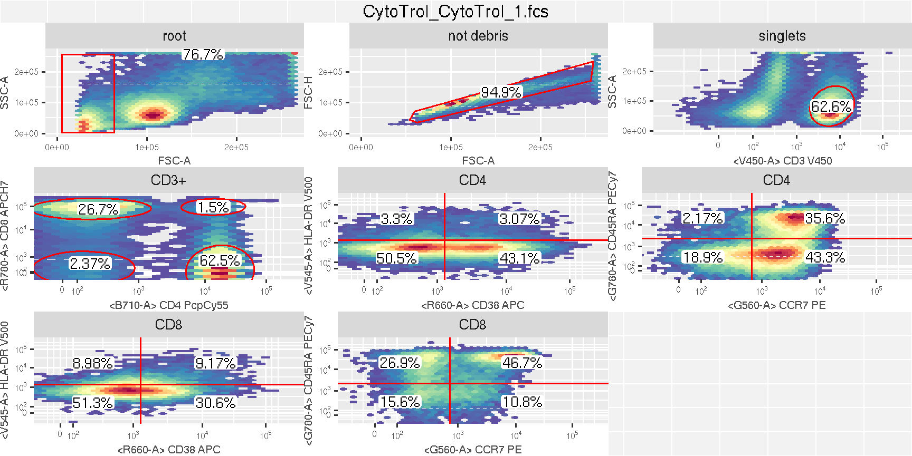
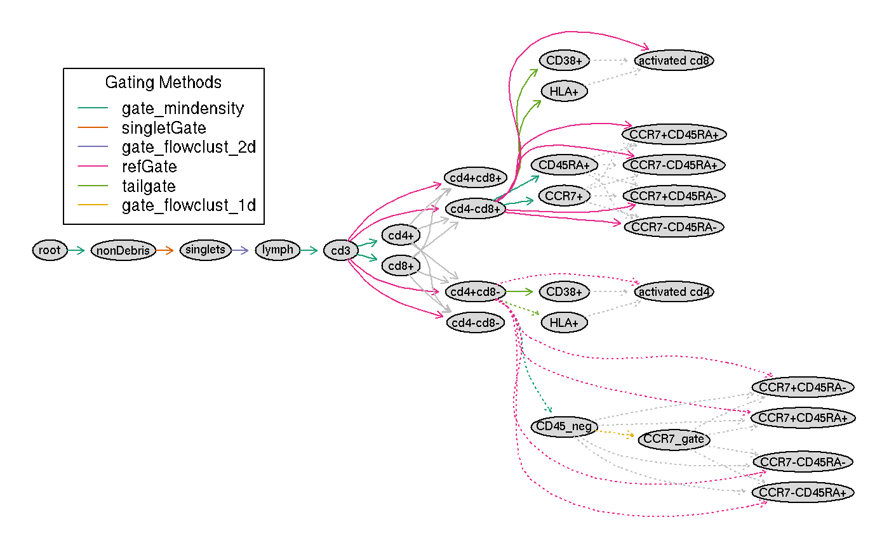
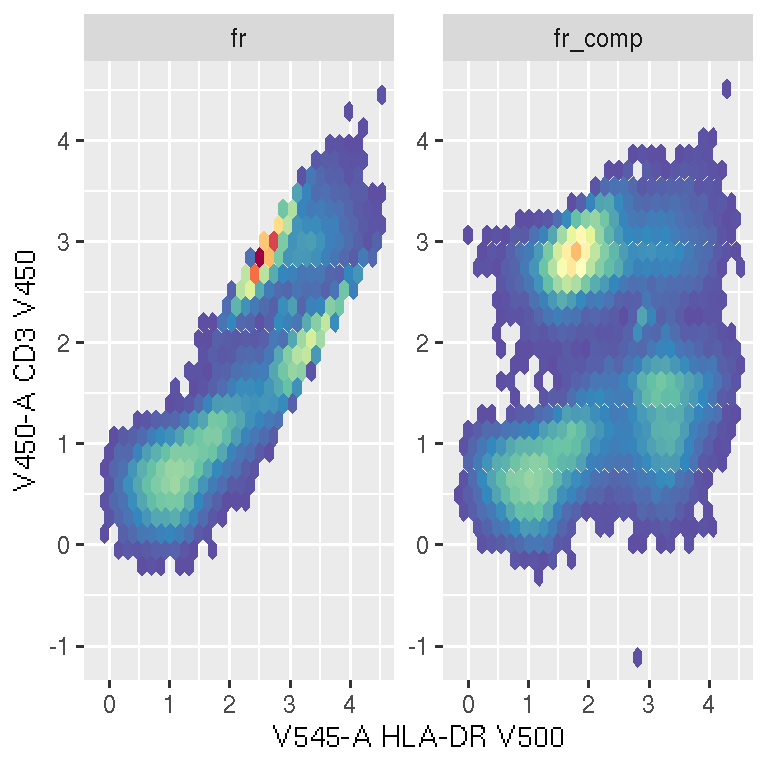
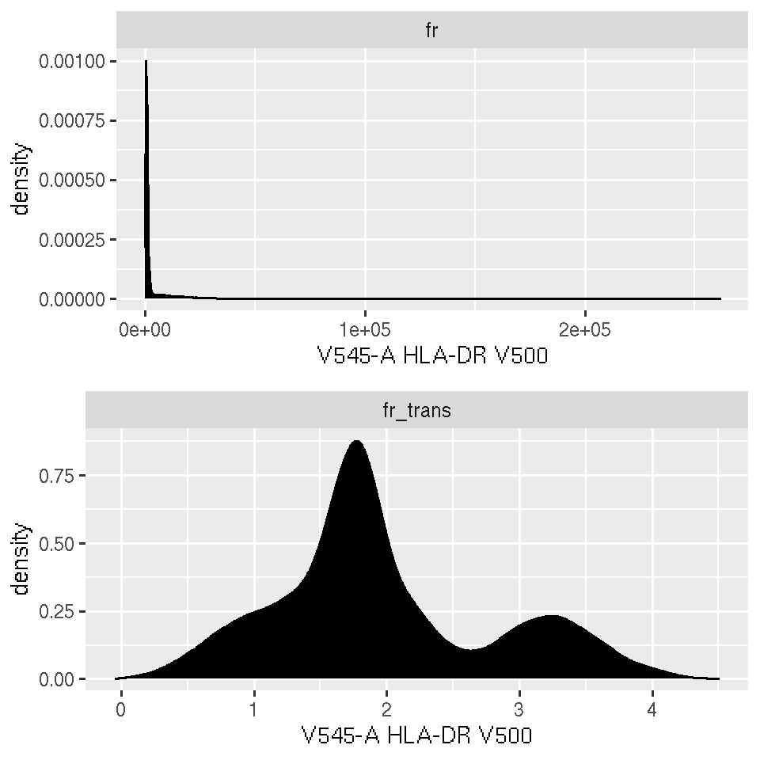
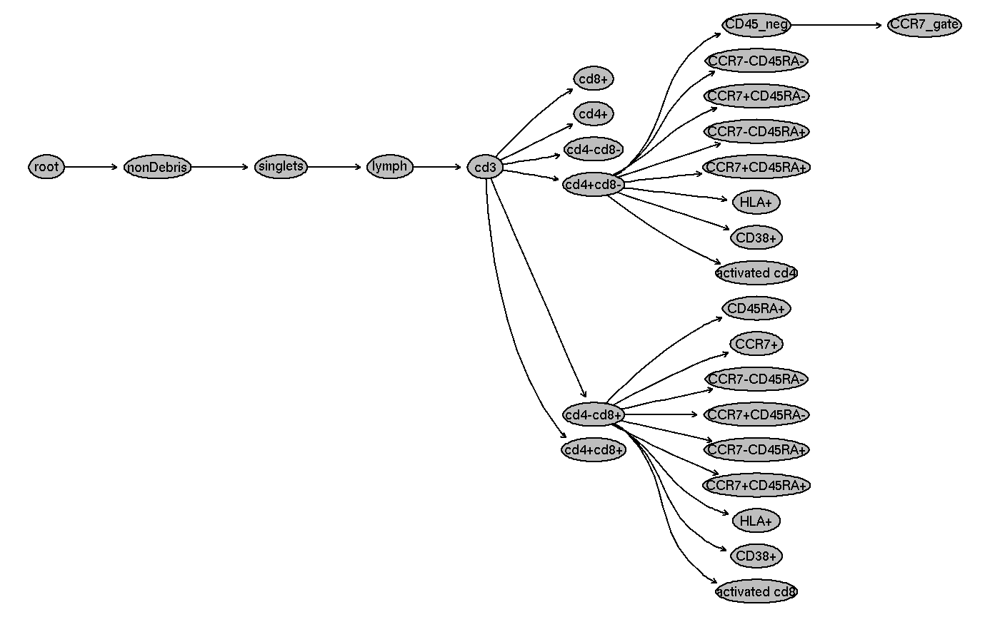

An Introduction to the openCyto package
openCytoVignette.Rmd## Loading required package: flowWorkspaceDataAn Introduction to openCyto package
1. Introduction
The openCyto package is designed to facilitate the automated gating methods in sequential way to mimic the manual gating scheme.
1.1. Manual gating
Traditionally, scientists have to draw the gates for each individual sample on each 2D projections (2 channels) within flowJo. Or draw the ’template gate’s on one sample and replicate it to other samples, then manually inspect the gate on each sample to do the correction if necessary. Either way is time consuming and subjective, thus not suitable for the large data sets generated by high-throughput flow Cytometers or the cross-lab data analysis.
Here is one xml workspace (manual gating scheme) exported from flowJo.
flowDataPath <- system.file("extdata", package = "flowWorkspaceData")
wsfile <- list.files(flowDataPath, pattern="manual.xml",full = TRUE)
wsfile## [1] "/usr/local/lib/R/cytoset/flowWorkspaceData/extdata/manual.xml"By usingflowWorkspacepackage, We can load it into R,
apply (flowjo_to_gatingset) themanual gatesdefined inxmlto the rawFSCfiles,
and then visualize theGating Hierarchy
 and the
and thegates:
 This is a gating scheme for T cell panel, which tries to identify T cell sub-populations. We can achieve the same results by using automated gating pipeline provided by this package.
1.2. Automated Gating
flowCore,flowStats,flowClust and other packages provides many different gating methods to detect cell populations and draw the gates automatically.
flowWorkspace package provides the GatingSet as an efficient data structure to store, query and visualize the hierarchical gated data.
By taking advantage of these tools, openCyto package can create the automated gating pipeline by a gating template, which is essentially the same kind of hierarchical gating scheme used by the biologists and scientists.
2. Create gating templates
2.1. Template format
First of all, we need to describe the gating hierarchy in a spread sheet (a plain text format). This spread sheet must have the following columns: * alias: a name used label the cell population, the path composed by the alias and its precedent nodes (e.g. /root/A/B/alias) has to be uniquely identifiable. * pop: population patterns of +/- or +/-+/-, which tells the algorithm which side (postive or negative) of 1d gate or which quadrant of 2d gate to be kept. * parent: the parent population alias, its path has to be uniquely identifiable. * dims: characters seperated by comma specifying the dimensions(1d or 2d) used for gating. It can be either channel name or stained marker name. * gating_method: the name of the gating function (e.g. flowClust). It is invoked by a wrapper function that has the identical function name prefixed with a dot.(e.g. .flowClust) * gating_args: the named arguments passed to gating function * collapseDataForGating: When TRUE, data is collapsed (within groups if groupBy specified) before gating and the gate is replicated across collapsed samples. When set FALSE (or blank),then groupBy argument is only used by preprocessing and ignored by gating. * groupBy: If given, samples are split into groups by the unique combinations of study variable (i.e. column names of pData,e.g.“PTID:VISITNO”). when split is numeric, then samples are grouped by every N samples * preprocessing_method: the name of the preprocessing function(e.g. prior_flowClust). It is invoked by a wrapper function that has the identical function name prefixed with a dot.(e.g. .prior_flowClust) the preprocessing results are then passed to gating wrapper function through pps_res argument. * preprocessing_args: the named arguments passed to preprocessing function.
2.2. Example template
Here is the an example of the gating template.
library(openCyto)
library(data.table)
gtFile <- system.file("extdata/gating_template/tcell.csv", package = "openCyto")
dtTemplate <- fread(gtFile)
dtTemplate## alias pop parent dims gating_method
## 1: nonDebris + root FSC-A gate_mindensity
## 2: singlets + nonDebris FSC-A,FSC-H singletGate
## 3: lymph + singlets FSC-A,SSC-A flowClust
## 4: cd3 + lymph CD3 gate_mindensity
## 5: * -/++/- cd3 cd4,cd8 gate_mindensity
## 6: activated cd4 ++ cd4+cd8- CD38,HLA tailgate
## 7: activated cd8 ++ cd4-cd8+ CD38,HLA tailgate
## 8: CD45_neg - cd4+cd8- CD45RA gate_mindensity
## 9: CCR7_gate + CD45_neg CCR7 flowClust
## 10: * +/-+/- cd4+cd8- CCR7,CD45RA refGate
## 11: * +/-+/- cd4-cd8+ CCR7,CD45RA gate_mindensity
## gating_args collapseDataForGating groupBy
## 1: NA NA
## 2: NA NA
## 3: K=2,target=c(1e5,5e4) NA NA
## 4: TRUE 4
## 5: gate_range=c(1,3) NA NA
## 6: NA NA
## 7: tol=0.08 NA NA
## 8: gate_range=c(2,3) NA NA
## 9: neg=1,pos=1 NA NA
## 10: CD45_neg:CCR7_gate NA NA
## 11: NA NA
## preprocessing_method preprocessing_args
## 1: NA
## 2: NA
## 3: prior_flowClust NA
## 4: NA
## 5: NA
## 6: standardize_flowset NA
## 7: standardize_flowset NA
## 8: NA
## 9: NA
## 10: NA
## 11: NAEach row is usually corresponding to one cell population and the gating method that is used to get that population. We will try to explain how to create this gating template based on the manual gating scheme row by row.
2.2.1. “nonDebris”
## alias pop parent dims gating_method gating_args
## 1: nonDebris + root FSC-A gate_mindensity
## collapseDataForGating groupBy preprocessing_method preprocessing_args
## 1: NA NA NA- The population name is
"nonDebris"(specified inaliasfield). - The
parentnode isroot(which is always the first node ofgating hierarchyby default). - We use
mindensity(one of thegatingfunctions provided byopenCytopackage) asgating_methodto gate on dimension (dim) ofFSC-A. - As the result, it will generate a 1d gate on
FSC-A.+inpopfield indicates thepositiveside of 1d gate is kept as the population of interest. - There is no
groupingorpreprocessinginvolved in this gate, thus leave the other columns asblank
2.2.2. “singlets”
## alias pop parent dims gating_method gating_args
## 1: singlets + nonDebris FSC-A,FSC-H singletGate
## collapseDataForGating groupBy preprocessing_method preprocessing_args
## 1: NA NA NA- The population name is
"singlets"(aliasfield). - The
parentnode isnonDebris. -
gating_methodissingletGate(function from byflowStatspackage) - As the result, a
polygonGatewill be generated onFSC-AandFSC-H(specified bydims) for each sample. - Again,
+inpopfield stands for"singlets+". But here it is 2d gate, which means we want to keep the area inside of the polygon
2.2.3. “lymphocyte”
## alias pop parent dims gating_method gating_args
## 1: lymph + singlets FSC-A,SSC-A flowClust K=2,target=c(1e5,5e4)
## collapseDataForGating groupBy preprocessing_method preprocessing_args
## 1: NA NA prior_flowClust NA- Similarly,
aliasspecifies the name of population -
parentpoints tosinglets - Since we are going to use
flowClustasgating_methodto do the 2-dimensional gating,dimsis comma separated string,xaxis (FSC-A) goes first,y(SSC-A) the second. This order doesn’t affect the gating process but will determine how the gates are displayed.
- All the parameters that
flowClustalgorithm accepts can be put ingating-argsas if they are typed inR console. seehelp(flowClust)for more details of these arguments -
flowClustalgorithm accept the extra argumentspriorsthat is calculated duringpreprocessingstage (before the actualgating), thus, we supply thepreprocessing_methodwithprior_flowClust.
2.2.4. “cd3+” (Tcell)
## alias pop parent dims gating_method gating_args collapseDataForGating
## 1: cd3 + lymph CD3 gate_mindensity TRUE
## groupBy preprocessing_method preprocessing_args
## 1: 4 NAIt is similar to the nonDebris gate except that we specify collapseDataForGating as TRUE, which tells the pipeline to collapse all samples into one and applies mindensity to the collapsed data on CD3 dimension. Once the gate is generated, it is replicated across all samples. This is only useful when each individual sample does not have enough events to deduce the gate. Here we do this just for the purpose of proof of concept.
2.2.5. CD4 and CD8
The forth row specifies pop as cd4+/-cd8+/-, which will be expanded this into 6 rows.
## alias pop parent dims gating_method gating_args
## 1: * -/++/- cd3 cd4,cd8 gate_mindensity gate_range=c(1,3)
## collapseDataForGating groupBy preprocessing_method preprocessing_args
## 1: NA NA NAFirst two rows are two 1d gates that will be generated by gating_method on each dimension (cd4 and cd8) independently:
## alias pop parent dims gating_method
## 1: cd4+ + /nonDebris/singlets/lymph/cd3 cd4 gate_mindensity
## 2: cd8+ + /nonDebris/singlets/lymph/cd3 cd8 gate_mindensity
## gating_args collapseDataForGating groupBy preprocessing_method
## 1: gate_range=c(1,3)
## 2: gate_range=c(1,3)
## preprocessing_args
## 1:
## 2:Then another 4 rows are 4 rectangleGates that corresponds to the 4 quadrants in 2d projection (cd4 vs cd8).
## alias pop parent dims gating_method
## 1: cd4+cd8+ ++ /nonDebris/singlets/lymph/cd3 cd4,cd8 refGate
## 2: cd4-cd8+ -+ /nonDebris/singlets/lymph/cd3 cd4,cd8 refGate
## 3: cd4+cd8- +- /nonDebris/singlets/lymph/cd3 cd4,cd8 refGate
## 4: cd4-cd8- -- /nonDebris/singlets/lymph/cd3 cd4,cd8 refGate
## gating_args
## 1: /nonDebris/singlets/lymph/cd3/cd4+:/nonDebris/singlets/lymph/cd3/cd8+
## 2: /nonDebris/singlets/lymph/cd3/cd4+:/nonDebris/singlets/lymph/cd3/cd8+
## 3: /nonDebris/singlets/lymph/cd3/cd4+:/nonDebris/singlets/lymph/cd3/cd8+
## 4: /nonDebris/singlets/lymph/cd3/cd4+:/nonDebris/singlets/lymph/cd3/cd8+
## collapseDataForGating groupBy preprocessing_method preprocessing_args
## 1:
## 2:
## 3:
## 4:As we see here, "refGate" in gating_method indicates that they are constructed based on the gate coordinates of the previous two 1d gates. Those 1d gates are thus considered as "reference gates" that are referred by colon separated alias string in gating_args: "cd4+:cd8+".
Alternatively, we can expand it into these 6 rows explicitly in the spread sheet. But this convenient representation is recommended unless user wants have finer control on how the gating is done. For instance, sometime we need to use different gating_methods to generate 1d gates on cd4 and cd8. Or cd8 gating needs to depend on cd4 gating ,i.e. the parent of c8+ is cd4+(or cd4-) instead of cd3. Sometimes we want to have the customized alias other than quadrant-like name (x+y+) that gets generated automatically. (e.g. 5th row of the gating template)
3. Load gating template
After the gating template is defined in the spread sheet, it can be loaded into R:
## --- Gating Template: default
## with 29 populations definedBesides looking at the spread sheet, we can examine the gating scheme by visualizing it:
 As we can see, the gating scheme has been expanded as we described above. All the colored arrows source from the parent population and the grey arrows source from the reference population(/gate).
4. Run the gating pipeline
Once we are satisfied with the gating template, we can apply it to the actual flow data.
4.1. Load the raw data
First of all, we load the raw FCS files into R by ncdfFlow::read.ncdfFlowSet (It uses less memory than flowCore::read.flowSet) and create an empty GatingSet object.
fcsFiles <- list.files(pattern = "CytoTrol", flowDataPath, full = TRUE)
ncfs <- read.ncdfFlowSet(fcsFiles)
fr <- ncfs[[1]]
gs <- GatingSet(ncfs)
gs## A GatingSet with 2 samples4.2. Compensation
Then, compensate the data. If we have compensation controls (i.e. single stained samples), we can calculate the compensation matrix by flowCore::spillover function. Here we simply use the compensation matrix defined in flowJo workspace.
Here is one example showing the compensation outcome: 
4.3. Transformation
All the stained channels need to be transformed properly before the gating. Here we use the flowCore::estimateLogicle to do the logicle transformation.
chnls <- parameters(compMat)
trans <- estimateLogicle(gs[[1]], channels = chnls)
gs <- transform(gs, trans)Here is one example showing the transformation outcome: 
4.5. Gating
Now we can apply the gating template to the data:
Optionally, we can run the pipeline in parallel to speed up gating. e.g.
4.6. Hide nodes
After gating, there are some extra populations generated automatically by the pipeline (e.g. refGate).
 We can hide these populations if we are not interested in them: